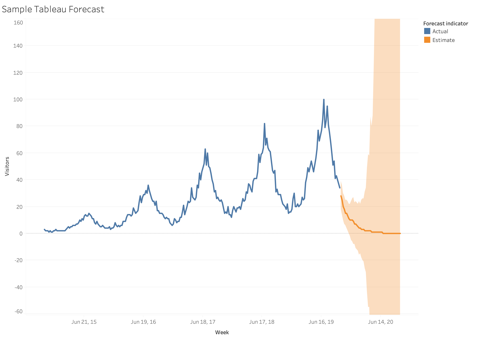
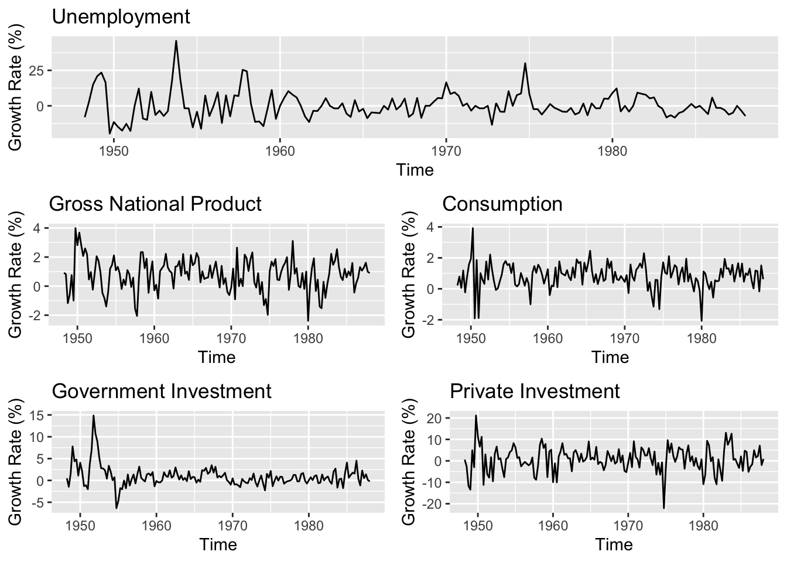
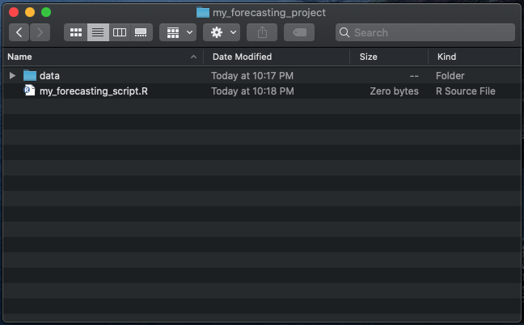
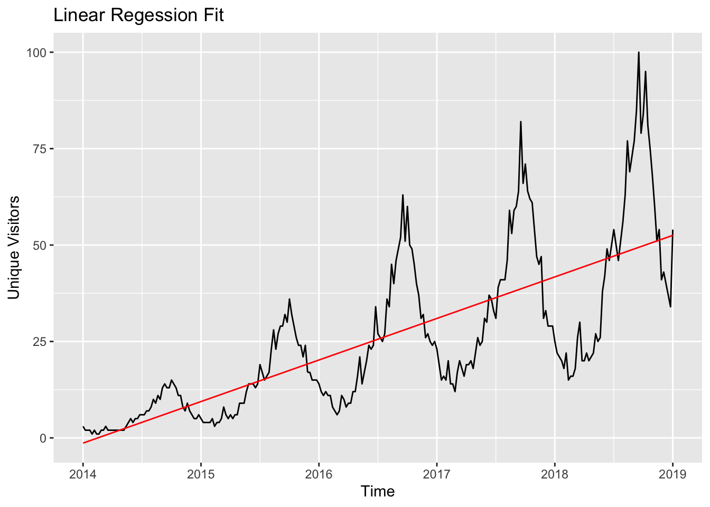
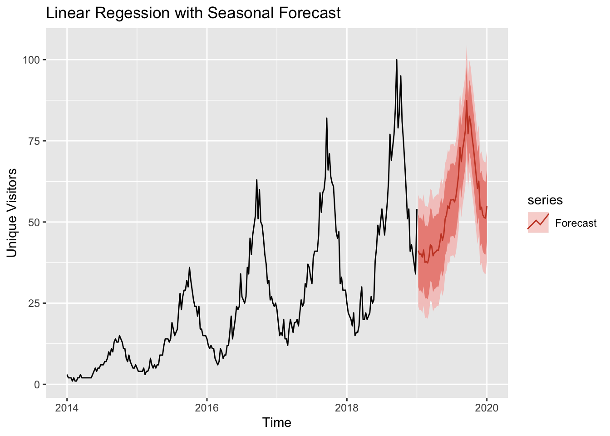
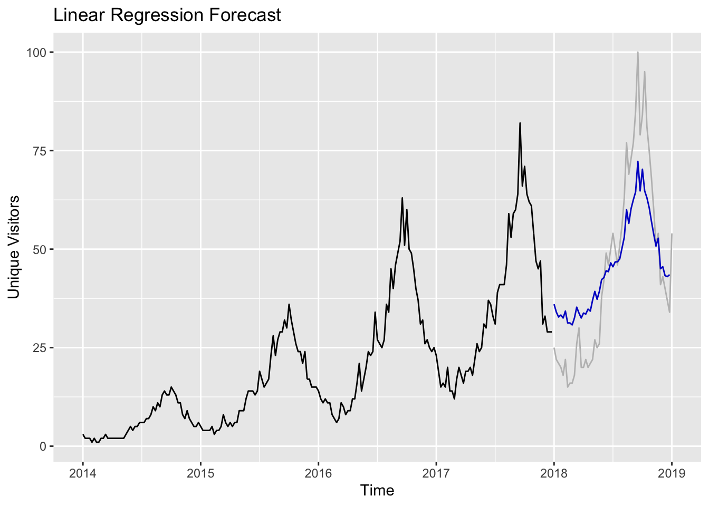

1 Introduction
Forecasting is a common practice to predict future values given historical data. It can be used to predict sales, expenses, web traffic, gross domestic product and other economic indicators, product usage, and so on.
Producing forecasts for univariate data is easy with off-the-shelf forecasting tools.
Tableau’s Forecast tool
is a common one, although there are other tools in commercial software like
Excel’s FORECAST() function, and Power BI’s ARIMA extension.

While these are simple (and usually pretty effective for simple forecasts), sometimes they don’t fit our modeling scenario or just fall short, like our good friend in the figure above.
It helps to know how to generate a forecast with open-source (free!) tools, since the models in commercial software are usually based on a common statistical models available in R. It also pays off to know some alternative models and additional tools that could improve the accuracy of the information being provided to stakeholders.
This guide is meant to show the most simple way to go form an off-the-shelf tool to a state-of-the-art* forecast in 1 hour*.
1.1 What is time series data?
Time series data is data that is indexed by some time measurement. As an Excel sheet or a table, it looks like a table with a column for the time and a column for the values of something at that time. Here is an example of the Dow Jones Industrial Average (DJIA) closing prices:
| Day | Close |
|---|---|
| 2006-04-20 | 11342.89 |
| 2006-04-21 | 11347.45 |
| 2006-04-24 | 11336.32 |
| 2006-04-25 | 11283.25 |
| 2006-04-26 | 11354.49 |
| 2006-04-27 | 11382.51 |
And here are the quarterly earnings per share for Johnson & Johnson:
| Quarter | Earnings |
|---|---|
| 1960.00 | 0.71 |
| 1960.25 | 0.63 |
| 1960.50 | 0.85 |
| 1960.75 | 0.44 |
| 1961.00 | 0.61 |
| 1961.25 | 0.69 |
Multivariate Time Series Data
The examples up to this point were examples of univariate time series data. Multivariate time series have a time column, and multiple measurements (additional columns) for a given time. Here is a multivariate time series of the seasonally adjusted, quarterly growth rate of U.S. unemployment, GNP, consumption,and government and private investments from 1948 to 1988.
| time | unemp | gnp | consum | govinv | prinv | |
|---|---|---|---|---|---|---|
| 2 | 1948.25 | -8.00 | 0.92 | 0.22 | 0.50 | 0.57 |
| 3 | 1948.50 | 2.74 | 0.82 | 0.79 | -1.44 | -2.63 |
| 4 | 1948.75 | 15.03 | -1.17 | 0.06 | 1.61 | -11.73 |
| 5 | 1949.00 | 20.91 | -0.59 | 1.18 | 7.78 | -13.42 |
| 6 | 1949.25 | 23.44 | 0.76 | -0.23 | 4.39 | 4.93 |
| 7 | 1949.50 | 16.48 | -0.99 | 0.79 | 4.81 | -2.95 |
Visualizing Multivariate Time Series Data
Looking at each series in the context of the other helps identify visual patterns, such as the spike in the unemployment growth rate in 1975 that led to a dip in GNP, consumption and private investment:

1.2 Loading time series data into R
If you’re new to R, you will first have to install R and R Studio on your machine. You can even change the R Studio theme once it’s installed if you’re feeling fancy.
1.2.1 Setting up the project
After everything is set up, open R Studio and open a new R script under
File > New File > R Script. This will open a blank file. First, save it underFile > Save
and save it in a new folder. Name the folder something useful, like my_forecasting_project or whatever
will help keep things organized.
This will be where you save any files related to your project. It’s good practice to keep different types of files in different folders, but we’ll use a simple, minimal folder structure that works for simple projects.
{kind=link}

To make sure R Studio can easily find files in your current folder, go to
Session > Set Working Directory > To Source File Location. This will set your working directory
as the folder that you created for the forecast script and data.
Finally, we need to install a few tools. In the R Console, type the following:
{kind=link}
install.packages("forecast")
install.packages("tidyverse")
install.packages("zoo")
install.packages("lubridate")These contain the forecasting and time series tools that will speed up processing data and generating forecasts.
1.2.2 Loading the sample data
In your own project, ensure that your time series data is in a folder called data in the top of the project directory, so that the file structure looks like:
my_forecasting_project
│ my_forecasting_script.R
│
└───data
│ │ my_data.csv
│ │We are now in R and have everything installed. Most scripting will happen in the R source panel. In the source panel, type the following:
and click Run in the top right-hand corner. Another option is select everything
in the script (cmd+A or ctrl+A) and then run it with cmd + return (or ctrl + return). If everything runs successfully, then you now have the functions loaded in your development environment to load the data.
Add the following lines under the previous lines of code to load the data and store it in a variable, my_data:
# load a csv from the data/ folder and store it as a dataframe
# the path relative to the current working directory
my_data <- read_csv('data/visitors.csv')Now that the data is successfully loaded, we can look at the first few rows. After writing the next block, move the cursor to the end of the line, and hit cmd+enter to run that specific line.
Going forward, use cmd+enter on the beginning of the line with the command that we want to execute to run each line of code.
## # A tibble: 6 x 2
## Week Visitors
## <chr> <dbl>
## 1 10/19/14 3
## 2 10/26/14 2
## 3 11/2/14 2
## 4 11/9/14 2
## 5 11/16/14 1
## 6 11/23/14 2These are standard steps across R workflows. Since we will be working with time
series data for forecasting, we will need to change the dataframe stored in
my_data to a ts() object. This is a special format that the forecast tools
understand.
# convert dataframe to a weekly time series, starting 1/2014
my_ts <- ts(my_data$Visitors, start=2014, freq=52)This step varies slightly depending on the time variable; this data is
weekly, but we can have monthly, quarterly, daily, annual, or even hourly data, which
requires a different value for freq.
1.2.3 Visualizing the sample data
To recap so far, this is how the my_forecasting_script.R file should look at this point:
library(forecast)
library(tidyverse)
library(zoo)
library(lubridate)
# load a csv from the data/ folder and store it as a dataframe
# the path relative to the current working directory
my_data <- read_csv('data/visitors.csv')
# view the first few lines of a dataframe
head(my_data)
# convert dataframe to a weekly time series, starting 1/2014
my_ts <- ts(my_data$Visitors, start=2014, freq=52)Now that the data is loaded and formatted, we can generate a quick visualization
using autoplot() function from the forecast package after the last line in the script:

The first line defines the base plot, and we add a title to it by adding + after
the autoplot() function, moving to the next line for readability, and using the
ggtitle() function to add a title to it. This is ggplot2 syntax. You can read
more about ggplot2 at depth in R for Data Science.
That’s it! You can start forecasting now. We will use this data to build a
simple linear regression forecast in the next section, equivalent to the FORECAST()
function in Excel.
1.3 A simple forecast
Using linear regression for time series analysis might seem odd to some people, since time series data usually violates linear regression assumptions, specifically regarding the issue of autocorrelated errors generated by the model. However this is a really easy way to generate some prediction about future values using past data, so it’s used anyway.
Our linear regression model predicts the value \(y\), given some values \(t\):
\[ y = \beta_0 + \beta_1t \]
where \(\beta_0\) is the intercept, and \(\beta_1\) is the slope in our data. These quantities are found by minimizing \((y - \hat{y})^2\), known as the squared error of the line and the data. This leads to a “best fit” straight line.
If the statement above is unclear, don’t fret. Just know that \(\beta_0\) and \(\beta_1\) are found automatically based on our data, and provide the best line possible for our data (the line with the smallest possible error between itself and the data points).
The following R examples should be added to the my_first_forecast.R script following
the code from the previous section about loading the data into R. The same variable names will be used.
The Magic Sauce
This is where we conjure some data entities. Usually we would use the lm() command in R (lm() stands for “linear model”), but there
is a function tslm() that is specifically for time series data.
After fitting the model use fitted() to see what the model looks like against our data.
# fit the model and store in a variable called my_model
my_model <- tslm(my_ts ~ trend)
# provide the fitted values of the model
model_fit <- my_model %>% fitted()tslm(my_ts ~ trend) means we want a linear model where my_ts is the dependent variable.
and trend is the independent variable, which indicates in this model that we want a
trend-only forecast (straight line). To add a seasonal linear regression component, use tslm(my_ts ~ trend + season).
This example uses trend only first to demonstrate a simple forecast.
Now that we have a model, let’s see how it looks compared to our data.
autoplot(my_ts) +
# autolayer() is used to add another time series to the plot
autolayer(model_fit, color="red") +
ggtitle("Linear Regession Fit") +
xlab("Time") +
ylab("Unique Visitors")
We can now make a forecast for the next year using forecast(), and add the number
of time steps to predict.
Let’s visualize it with our historical data:
autoplot(my_ts) +
# the "series" argument labels the data in the legend
autolayer(next_years_visitors, series="Forecast") +
ggtitle("Linear Regession Forecast") +
xlab("Time") +
ylab("Unique Visitors")
This is linear regression as a trend-only model (what is typically used in the FORECAST() function
in Excel). To get trend and seasonality:
# fit a model with trend and season
seasonal_model <- tslm(my_ts ~ trend + season)
# forecast the next 52 weeks with the model
seasonal_forecast <- seasonal_model %>% forecast(h=52)which produces the following trend:
autoplot(my_ts) +
autolayer(seasonal_forecast, series="Forecast") +
ggtitle("Linear Regession with Seasonal Forecast") +
xlab("Time") +
ylab("Unique Visitors")
To export the predictions as a .csv, write
in the R Console. Change the .csv to any file name that makes sense.
1.4 Forecast accuracy

How accurate is this model?
Forecasting is sometimes seen as magic. You put a coin in the machine and it prints out a ticket with a prediction of the future.
While this isn’t too far off from the reality of a data scientist, I would like to believe that data science is built on more than fortune telling; it’s built on healthy skepticism, scientific rigor, and confusing branding.
So before providing a prediction about the future, remember that predictions about the future are generated using a model of the past. If the future is expected to look very different from the past, then the predictions of the future will be unreliable.
For this reason, it’s important to provide a measure of model accuracy.
1.4.1 Evaluating the forecast in R
There are a few accuracy metrics for forecasting models, each with their strengths
and weaknesses.The forecast package in R has simple implementations of evaluation metrics
to see how well the model fits the data, and how well it predicts a small, held-out sample of the
data.
Linear regression evaluation
To see how well a linear regression model fits our data, we split the data into a training and test set. The training set is used to build the linear regression model, and the test set is used to provide an accuracy metric to judge the performance of the model on new data.
train_data <- my_ts %>% window(end=decimal_date(ymd('2017-12-31')))
test_data <- my_ts %>% window(start=decimal_date(ymd('2018-01-01')))The simplest error metric is mean absolute error (MAE), which is found by subtracting the predicted value from the actual value at each time \(t\), and then seeing what the average error was, across all times.
The downside of this accuracy measure is that it assumes large errors and small errors are weighted equally. This is why it’s important to also visualize the model residuals to detect large errors or outliers.
autoplot(train_data, series="Training") +
autolayer(test_data, series="Test") +
guides(colour=guide_legend("Split")) +
scale_color_manual(values=c("grey", "black")) +
xlab("Time") +
ylab("Unique Visitors") +
ggtitle("Train/Test Split: Weekly Data")
Now we calculate the test accuracy of the model after re-fitting on the training data only. We can also visualize the model prediction to get an idea of how well the model generalizes:
# fit a model on the training data with trend and season
train_model <- tslm(train_data ~ trend + season)
# forecast the next 52 weeks with the model; forecast horizon matches the test data
train_forecast <- train_model %>% forecast(h=52)
# assess the model accuracy
accuracy(train_forecast, test_data)## ME RMSE MAE MPE MAPE MASE
## Training set -1.694566e-16 5.593233 4.374418 32.72353 64.19841 0.4454368
## Test set -8.461538e-01 12.395640 10.642197 -20.39926 33.47341 1.0836702
## ACF1 Theil's U
## Training set 0.8816498 NA
## Test set 0.9048891 2.747126# plot the predictions
autoplot(train_data, color="black") +
autolayer(test_data, color="grey") +
autolayer(train_forecast, PI=FALSE) +
xlab("Time") +
ylab("Unique Visitors") +
ggtitle("Linear Regression Forecast")
If we focus solely on mean absolute error (MAE), we see that our model is off by about 11 visitors per week, on average. The quality of this model could be sufficient if it’s only used to help guide a judgmental forecast (one you come up with based on intuition), but it could be insufficient if the forecast is a major input to a managerial decision.
The rest of the guide is designed to demonstrate the tools for providing more accurate forecasts.
Summary
Those are roughly the steps to produce a forecast in R:
- Load data and convert it to a time series
- Fit a model to training data
- Evaluate the model on test data
- Re-fit the model on the full data
- Forecast the future
In practice, model evaluation (seeing how well it generalizes) and model interpretation are crucial steps in the process that will require a bit more work. The steps up to this point illustrate how to just do the thing in R.